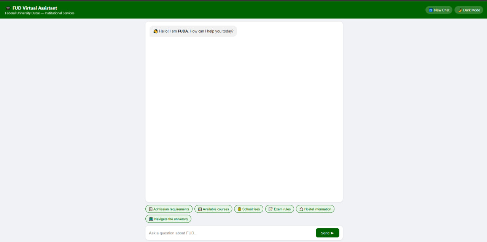
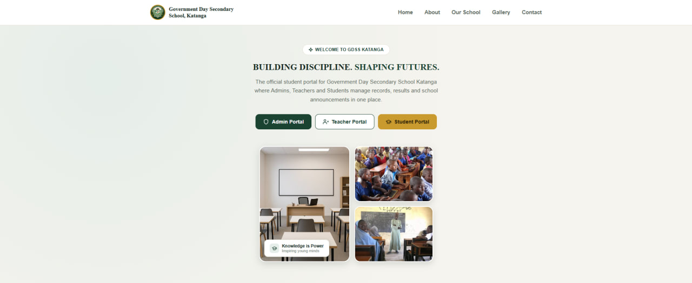
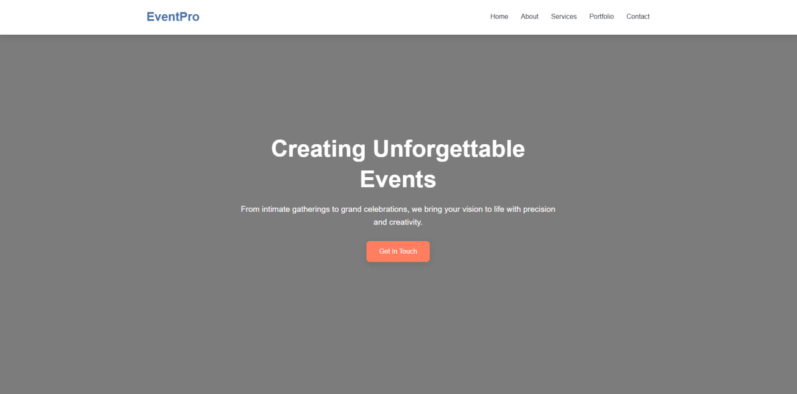

About me
I am Yusuf Ya’u, a Software Engineering graduate from Federal University Dutse, Nigeria, with strong interests in Computer Vision, Natural Language Processing and intelligent software systems.
My experience combines software development with practical projects, including work with Python, FastAPI, LangChain, and large language models. I am particularly interested in applying technology to solve real-world problems and developing efficient, impactful intelligent systems.
I am currently seeking opportunities where I can deepen my research skills, collaborate with researchers, and contribute to meaningful work in AI and related fields. My long-term goal is to grow as an AI researcher and use technology to create meaningful impact in developing communities.
I believe in continuous learning, purposeful research, and building technology that goes beyond functionality to solve problems that matter.
Key Projects

FUDA: FUD Virtual Assistant
RAG chatbot for university information. Research project
Problem: Students often struggle to find accurate answers about university processes, rules and services. Information is spread across many documents and offices.
Solution: A virtual assistant that retrieves answers from official university documents and replies in plain language, so students get reliable help at any time.
My role: Designed and built the system, from document processing and retrieval to the chat interface.
Code | Live demo

Student Information and Portal Management System
Built for GDSS Katanga. Final-year project
Problem: School records and student information were hard to manage, find and keep up to date.
Solution: A web portal that gives staff and students one place to manage records and access information.
My role: Designed, developed and tested the system.
Live demo
EventPro: Event Management Website

Responsive website for an event planning business
Problem: Event planners need a professional online presence where clients can see their services, view past work and send an enquiry.
Solution: A responsive website with a hero section, six service cards (weddings, corporate events, birthdays, catering, photography and decoration), a portfolio gallery, and a contact form connected to Formspree.
My role: Designed and built the website.
Code on GitHub | Live demo
Academic and Research Goals
My academic goal is to pursue advanced study in AI, NLP, and software engineering, with a particular interest in developing reliable and efficient AI systems for education. I am interested in exploring how retrieval-augmented systems can provide students and educational institutions with accurate and accessible information, while building on my previous research experience toward a focused MSc thesis.
After my MSc, I plan to continue developing my research experience and contribute to the development of practical AI technologies that can improve education in Nigeria and similar regions.
Research Collaboration
I welcome research collaboration with professors and research groups working in NLP, retrieval-augmented generation, educational technology, and related areas. If our research interests align, I would be glad to discuss potential research opportunities.